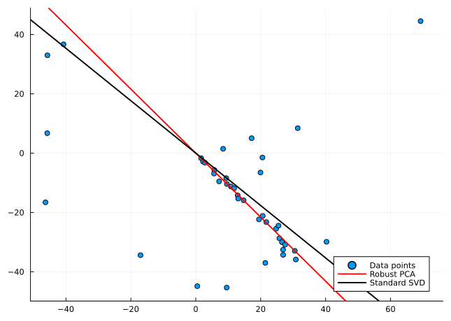

The Robust PCA computed on the Grassmann manifold
Ronny Bergmann, Laura Weigl 7/2/23
For this example we first load the necessary packages.
using Pkg;
Pkg.activate("."); # use the example environment,using LinearAlgebra, Random, Statistics
using Manifolds, Manopt, ManoptExamples
using Plots
Random.seed!(42)Computing a Robust PCA
For a given matrix $D ∈ ℝ^{d×n}$ whose columns represent points in $ℝ^d$, a matrix $p ∈ ℝ^{d×m}$ is computed for a given dimension $m < n$: $p$ represents an ONB of $ℝ^{d×m}$ such that the column space of $p$ approximates the points (columns of $D$), i.e. the vectors $D_i$ as well as possible.
We compute $p$ as a minimizer over the Grassmann manifold of the cost function:
\[\begin{split} f(p) & = \frac{1}{n}\sum_{i=1}^{n}{\operatorname{dist}(D_i, \operatorname{span}(p))} \\ & = \frac{1}{n} \sum_{i=1}^{n}\lVert pp^TD_i - D_i\rVert \end{split}\]
The output cost represents the average distance achieved with the returned $p$, an orthonormal basis (or a point on the Stiefel manifold) representing the subspace (a point on the Grassmann manifold). Notice that norms are not squared, so we have a robust cost function. This means that $f$ is nonsmooth, therefore we regularize with a pseudo-Huber loss function of smoothing parameter $ε$.
\[f_ϵ(p) = \frac{1}{n} \sum_{i=1}^n{ℓ_ϵ(\lVert pp^{\mathrm{T}}D_i - D_i\rVert)},\]
where $ℓ_ϵ(x) = \sqrt{x^2 + ϵ^2} - ϵ$.
The smoothing parameter is iteratively reduced in the final optimisation runs(with warm starts).
First, we generate random data. For illustration purposes we take points in $\mathbb R^2$ and $m=1$, that is we aim to find a robust regression line.
n = 40
d = 2
outliers = 15
data = randn(d, 1) * (1:n)' + 0.05 * randn(2, n) .* [1:n 1:n]'
# Outliers:
permute = shuffle(1:size(data, 2))'
data[:, permute[1:outliers]] = 30 * randn(2, outliers)
# We are looking for a line here so we set
m = 1We use the Manopt toolbox to optimize the regularized cost function over the Grassmann manifold. To do this, we first need to define the problem structure.
M = Grassmann(d,m);For the initial matrix $p_0$ we use classical PCA via singular value decomposition. Thus, we use the first $d$ left singular vectors.
Then, we compute an optimum of the cost function over the Grassmann manifold. We use a trust-region method which is implemented in Manopt.jl.
Furthermore the cost and gradient are implemented in ManoptExamples.jl. Since these are Huber regularized, both functors have the ϵ as a parameter. To compute the Riemannian gradient we first compute the Euclidian gradient. Afterwards it is projected onto the tangent space by using the orthogonal projection $pp^T - I$, which converts the Euclidean to the Riemannian gradient.
The trust-region method also requires the Hessian Matrix. By using ApproxHessianFiniteDifference using a finite difference scheme we get an approximation of the Hessian Matrix.
We run the procedure several times, where the smoothing parameter $ε$ is reduced iteratively.
ε = 1.0
iterations = 6
reduction = 0.5
U, S, V = svd(data);
p0 = U[:, 1:m]2×1 Matrix{Float64}:
-0.7494248652139394
0.6620893983436593Let’s generate the cost and gradient we aim to use here
f = ManoptExamples.RobustPCACost(M, data, ε)
grad_f = ManoptExamples.RobustPCAGrad!!(M, data, ε)ManoptExamples.RobustPCAGrad!!{Matrix{Float64}, Float64}([9.537606557855465 1.6583418797018163 … 30.833523701909474 30.512999245062304; -45.34339972619071 -1.7120433539256108 … -35.85943792458936 -32.93976007215313], 1.0, [0.0 0.0 … 0.0 0.0; 0.0 0.0 … 0.0 0.0])and check the initial cost
f(M, p0)9.43069094790552Now we iterate the opimization with reducing ε after every iteration, which we update in f and grad_f.
q = copy(M, p0)
εi = ε
for i in 1:iterations
f.ε = εi
grad_f.ε = εi
global q = trust_regions(
M,
f,
grad_f,
ApproxHessianFiniteDifference(
M, q, f;
vector_transport_method=ProjectionTransport(),
retraction_method=PolarRetraction(),
),
q;
(project!)=project!,
)
global εi *= reduction
endWhen finally setting ε we can investigate the final cost
f.ε = 0.0
f(M, q)9.412965075156471Finally, the results are presented visually. The data points are visualized in a scatter plot. The result of the robust PCA and (for comparison) the standard SVD solution are plotted as straight lines.
fig = plot(data[1, :], data[2, :]; seriestype=:scatter, label="Data points");
plot!(
fig,
q[1] * [-1, 1] * 100,
q[2] * [-1, 1] * 100;
linecolor=:red,
linewidth=2,
label="Robust PCA",
);
plot!(
fig,
p0[1] * [-1, 1] * 100,
p0[2] * [-1, 1] * 100;
xlims=1.1 * [minimum(data[1, :]), maximum(data[1, :])],
ylims=1.1 * [minimum(data[2, :]), maximum(data[2, :])],
linewidth=2,
linecolor=:black,
label="Standard SVD",
)